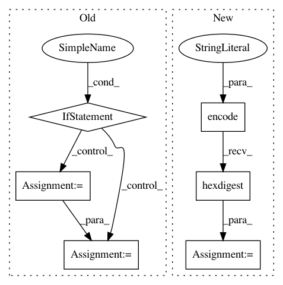

12c41492afd6b25847c277be1adaee6642f4756e,tensorflow_datasets/core/download/download_manager.py,DownloadManager,_download,#DownloadManager#Any#,303
Before Change
if isinstance(resource, six.string_types):
resource = resource_lib.Resource(url=resource)
url = resource.url
if url in self._url_infos:
expected_sha256 = self._url_infos[url].checksum
download_path = self._get_final_dl_path(url, expected_sha256)
if not self._force_download and resource.exists_locally(download_path):
logging.info("URL %s already downloaded: reusing %s.",
url, download_path)
self._recorded_url_infos[url] = self._url_infos[url]
return promise.Promise.resolve(download_path)
// There is a slight difference between downloader and extractor here:
// the extractor manages its own temp directory, while the DownloadManager
// manages the temp directory of downloader.
download_dir_path = os.path.join(
self._download_dir,
"%s.tmp.%s" % (resource_lib.get_dl_dirname(url), uuid.uuid4().hex))
tf.io.gfile.makedirs(download_dir_path)
After Change
url = resource.url
// Compute the existing path if the file was previously downloaded
url_path = self._get_final_dl_path(
url, hashlib.sha256(url.encode("utf-8")).hexdigest())
existing_path = self._find_existing_path(url=url, url_path=url_path)
// If register checksums and file already downloaded, then:
// * Record the url_infos of the downloaded file
In pattern: SUPERPATTERN
Frequency: 3
Non-data size: 6
Instances
Project Name: tensorflow/datasets
Commit Name: 12c41492afd6b25847c277be1adaee6642f4756e
Time: 2020-05-12
Author: epot@google.com
File Name: tensorflow_datasets/core/download/download_manager.py
Class Name: DownloadManager
Method Name: _download
Project Name: matthewwithanm/django-imagekit
Commit Name: 64d95768f8192b11b8d390c198a2eee95ec82373
Time: 2012-11-01
Author: m@tthewwithanm.com
File Name: imagekit/files.py
Class Name: ImageSpecCacheFile
Method Name: name
Project Name: cve-search/cve-search
Commit Name: 5dc053923afeefed29ce7fc6d56b26a62acac432
Time: 2019-11-07
Author: sami.kairajarvi@gmail.com
File Name: sbin/db_mgmt_json.py
Class Name:
Method Name: process_cve_item